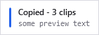

A keyboard-driven multiple-clipboard manager for Windows.
Hold Ctrl, tap V to step back through what you have copied, release to
paste. No window, no mouse, no hands leaving the keyboard. That gesture — a jog wheel for your
clipboard — is the whole point of the program; everything else exists to support it.
PasteJump has no main window. It sits in the notification area, next to the clock:
| Left-click the icon | Opens the clipboard history window. |
| Right-click the icon | The menu: about, clipboard history, pause, settings, this manual, the paste-mode key list, check for updates, disable, restart and exit. |
The icon itself reports the state, by colour and by glyph so it still reads in greyscale:
| Icon | Meaning |
|---|---|
| Blue | Running normally: watching the clipboard, and the gesture works. |
| Amber, with pause bars | Capture is paused. Nothing new is recorded, but the gesture still pastes from the clips already held. |
| Grey | Disabled. The keyboard hook is uninstalled, so
Ctrl+V passes straight through as if PasteJump were not running. |

The optional notification after each copy: the clip count and a preview. It never takes focus, and it can be switched off under Settings, Appearance.
Only one copy runs at a time, per signed-in user. Starting PasteJump when it is already running shows a brief notification in the corner of the screen saying so, and points at the notification-area icon, rather than starting a second copy or appearing to do nothing. Two copies would fight over the clipboard and install two keyboard hooks. Another user signed in to the same computer is unaffected: they get their own.
Pause and Disable are not the same thing. Pause stops recording and is remembered between
runs, because it is a preference. Disable also releases Ctrl+V and is
deliberately not remembered — a clipboard manager that quietly started up dead weeks later
would look broken.
PasteJump ships as a single PasteJump.exe with nothing beside it and no .NET runtime
required on the machine. It writes its data to a data folder next to the executable, so a
copy on a USB stick carries its own history. See Settings if the program
folder is not writable, which is what unzipping under C:\Program Files means in practice.
Right-click the tray icon and choose Check for Updates…. PasteJump asks GitHub for the latest published release and tells you whether the copy you are running is newer, older or the same.
It happens only when you ask. Nothing checks at start-up: a clipboard manager that contacts a server the moment you sign in is doing something you did not request, and it would put a network round trip in front of the tray icon appearing.
It reports rather than installs. If a newer release exists you are offered the release page to download it from — replacing a running program needs administrator rights for an installed copy, and a signature worth trusting, so PasteJump does not attempt it.
Which releases you are offered is a setting, under Settings, System, Update Channel:
| Channel | What it offers |
|---|---|
| Stable | Published releases that are not marked as pre-releases. The default, and the right choice for almost everybody. If no stable release exists yet the check says so plainly and points at the Developer channel, rather than claiming nothing has been published. |
| Stable (delayed 1 week) | The same, but a release is withheld until it is seven days old — so that other people meet a bad one first. |
| Developer | Every published release, pre-releases included. Choose this to be told about a pre-release as soon as it appears, rather than waiting for the next stable one. |
Drafts are never offered on any channel: nobody but their author can download one.
| The gesture | Every key that works while
Ctrl is held. The one page worth reading in full. |
| Clips and history | PasteJump keeps what you copy in two places. Confusing them is the easiest mistake to make here. |
| The history window | Searching, copying back, deleting, and removing duplicates. |
| Settings | Every option, tab by tab. |
| Importing from Clipjump | Bringing an existing Clipjump history and clip stack across. |
| Another clipboard manager | Read this if copying works and pasting silently does nothing. |
| Troubleshooting | The symptoms that have actually been reported, and what each one means. |